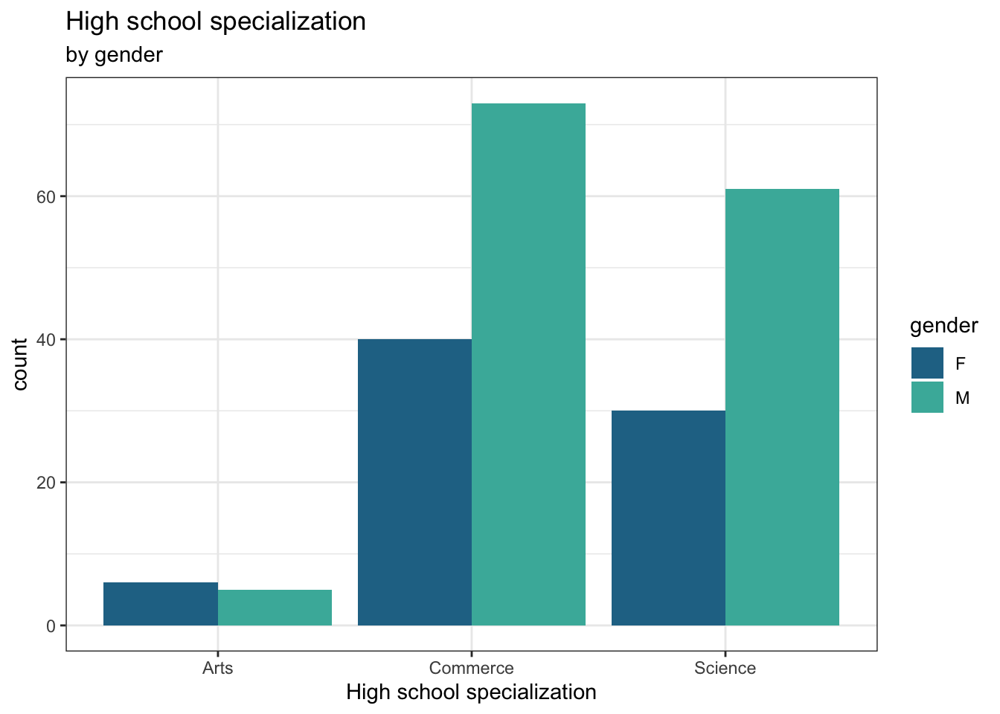
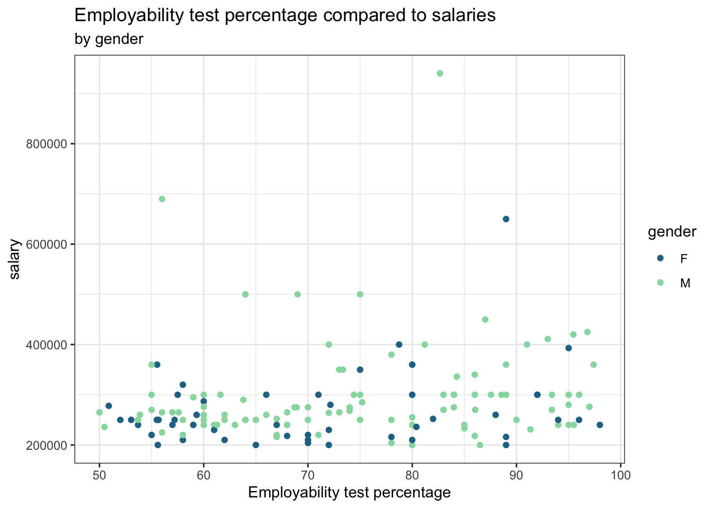

Female students are nearly as likely to be hired into professional positions as male students, the pay gap is unfortunately not so narrow


1 Data Science & Analytics Program, GVSU
“An honest day’s work for an honest day’s pay”. This is a phrase that many of us have heard growing up through the years, meaning that your efforts will be rewarded with appropriate pay. However, as we grow older, we come to realize that this is not necessarily the case. Particularly, women have historically been paid less than men for doing essentially the same job. With the help of statistical analysis, we have become more aware of the details behind the pay gap.
Figure 1: Salary distribution for each gender
It is noticeable that women has a lower weekly wage compared to men.
| Occupation | female_male_ratio | female_male_pay_difference_ratio |
|---|---|---|
| Secretaries and administrative assistants | 94.42195 | -13.1043257 |
| Receptionists and information clerks | 91.66667 | -8.0775444 |
| Bookkeeping, accounting, and auditing clerks | 88.68661 | 0.2898551 |
| Nursing, psychiatric, and home health aides | 88.35714 | -13.1178707 |
| Registered nurses | 88.32914 | -10.1472995 |
| HEALTHCARE SUPPORT | 86.59708 | -15.0779896 |
| Maids and housekeeping cleaners | 84.70320 | -14.3157895 |
| Office clerks, general | 83.20775 | 2.1346470 |
| Personal care aides | 81.17647 | -17.8770950 |
| Social workers | 81.09306 | -8.5896076 |
Even in occupations dominated by women, they still get paid less than men.
Not only wage is an issue, there is also a huge gap on education

Most High School Specializations are dominated by men.

Not even more qualified women gets better salaries. Even, out of the 6 outstanding salaries, only one is women, and had way higher employability test percentage than the others.
We saw that while female students are nearly as likely to be hired into professional positions as male students, the pay gap is unfortunately not so narrow. Through analyzing the data, we conclude that these female students encounter the same problems as their professional counterparts when it comes to compensation. While MBA degree progression is also a key factor in determining starting salary, that is at least an objective measure of education.
Female students are nearly as likely to be hired into professional positions as male students, the pay gap is unfortunately not so narrow